← 返回阅读库 · 原论文目录
论文讲解阅读文档 · 新模型 · v072
Point Transformer V2[2210.05666]
视频时长 00:10:35；讲解文字 5,208 字符；提取讲解画面 36 张。按视频原顺序阅读，每段文字保留时间戳。
文字来自整段视频的自动语音转写，按自然停顿分段，并与 PPT / 论文页面 / 演示画面对齐。未将讲解压缩为摘要；术语、数字和口述公式请结合画面及原论文核对。 阅读稿已校正规范部分明确术语误识别；原始逐字稿和每处修改记录另行保留。
讲解画面为源视频截图（640×360），不是可编辑 PPT 文件。全片按每秒 2 帧扫描内容变化，逐步展开页保留；连续动画保留代表画面。清晰度受源视频限制。
下载完整资料包 · 含离线 HTML、PDF、Word、全部 PPT 画面和字幕。
原论文与材料
Point Transformer V2: Grouped Vector Attention and Partition-based Pooling · 下载完整 PDF（16 页）
按时间阅读
00:00:00–00:00:16 · 画面 001
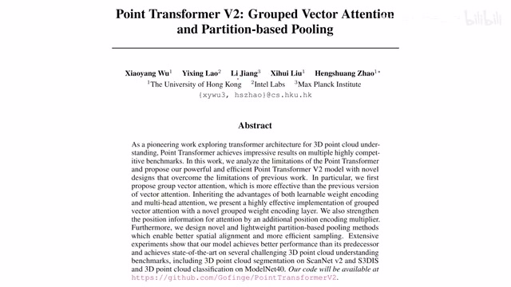
00:00:00–00:00:16 · 画面 001大家好今天我们来快速说一篇论文 Point Transformer V2Grouped Vector Attention and Partition-Based Pooling 这篇论文是我们很久以前介绍过的 Point Transformer 它的一个后续的工作我们直接来看
00:00:16–00:00:54 · 画面 002
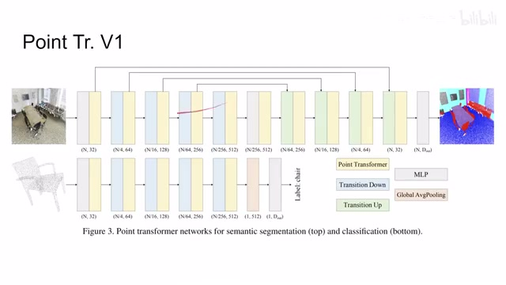
00:00:16–00:00:54 · 画面 002那首先一个快速的回顾之前的这个 Point Transformer 第一代的版本它呢本质上就设计了三个模块一个就是这个 Transformer 的部分嘛就是 Attention 你该怎么做针对点云的 Attention 然后呢再就是这个 Transition Down 和 Transition Up 那这两个意味着比如说我这个 Transition Down 就是我从一个稠密的点云我把它降采样成一个稀疏的点云那这样子通过减少点的数量嘛可以让我们每一个点拥有空间能够去容纳更长的 Feature 这个是 Transition Down
那现在呢 TransitionUp 就是一个我从相对稀少的点给它重新插补回这个稠密的点这么一个过程那么这个如果你不熟悉的话非常推荐你先去把我们之前的那个视频看了那么然后呢我们就可以看到今天这一篇的工作那么在开始之前呢首先是这个标记上的这个区别区别于第一代的这个作品那这一代呢
00:00:54–00:00:55 · 画面 003
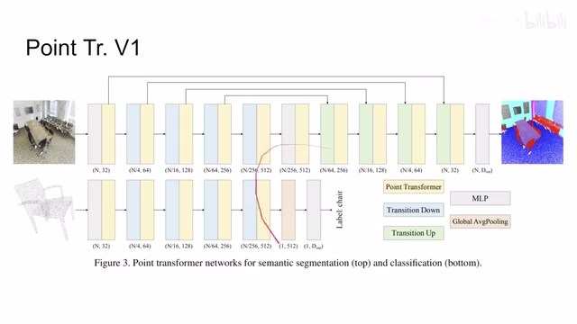
00:00:54–00:00:55 · 画面 00300:00:55–00:01:02 · 画面 004
00:00:55–00:01:02 · 画面 00400:01:02–00:01:29 · 画面 005
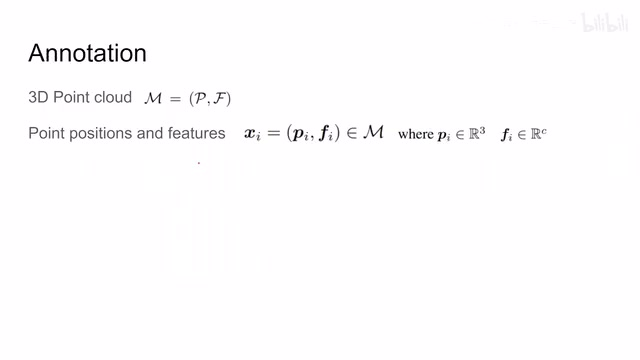
00:01:02–00:01:29 · 画面 005这个它的标记上对吧我们的一个点云是这个 m 然后呢每个点呢是这个 x 这个 x 呢它包括了这个 position 也就是 xyz 的那个坐标还有这个 feature 那这个 feature 这个 f 呢原来在这个第一代里面它叫做 x 这个大家注意一下这是第二代的这样一个标记的这么一个变化
00:01:29–00:02:01 · 画面 006
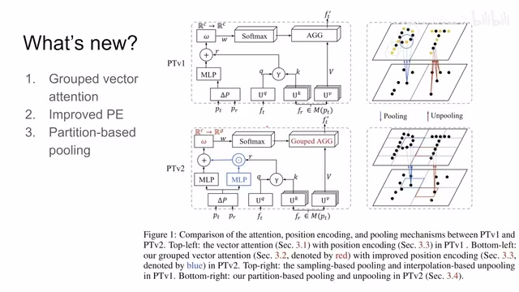
00:01:29–00:02:01 · 画面 006那么下面我们来看这一代呢相对于之前一代改进了什么那主要呢有三点其中两点呢都在这个标题中体现出来了一个叫做这个 group vector attention 也就是你看到啊粗略一看这个 attention 这个环节这个 point transformer 这个 attention 的环节作者做了一些更改那后面我们会仔细讲到它那么第二个呢是这个 improved positional embedding 就是这个位置这个其实是一个非常简单的改动那么最后呢是这个 partition based pooling
也就是在这个上采样和下采样过程中做了哪些改进那下面我们具体来看首先最核心的是这个 group vector 的 attention 那么它的核心思想其实非常简单你想我们在做传统的 attention 的时候我们的 query 和 key 算出来算出来一个 attention map 然后这个 attention map 呢去根据这个 attention 的这个权重去抓相应的这个 value 的这个值
00:02:01–00:04:01 · 画面 007
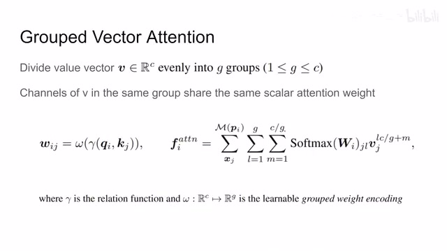
00:02:01–00:04:01 · 画面 007假如说你这个 value 的长度是 C 你这个 attention 矩阵它的这个面积至少是这个 C 的平方这是一个计算开销很大的事情那么为了节约这一部分算力作者说好我现在把这个 value 它不是有 C 个 channel 吗我把这 C 个 channel 给它分成一个个 group 我把它均匀的分成这个 G 一个 group那么每一个 group 里面的这些所有的 channel 呢他们共用一个这个 attention 的这个权重那这样子呢你就相当于原来我需要给 c 个 channel 每个 channel 都预测一个权重那现在呢我的 attention 只需要计算这个 groupgroup 数量的这个权重就可以了那么通过这种方式呢就可以把计算量降下来了
具体的来看就是你看我这个 query 和 key 对吧我先过一个这个 gamma 这个 relation function 比如说在上一代里面这个 relation 就是 query 和 key 相减然后呢 query key 然后做一个 projection 对吧就是 attention layer 就是预测出这个 attention 这个基础的值然后你再过 softmax 就可以了那如果按照原来的标准来讲这个 Omega 这里进来是这个 C channel 那它出来也应该是 C channel 但是现在呢我因为分成了这个 ggroup 了那我进来是 C channel 没错我预测的时候我只需要预测出这个 groupchannel 就可以了这里呢节约了计算那实际在计算这个新的 feature 的时候也是对吧 softmax 下来这个 j 是针对某一个点取这一点的这个 value
然后呢，再看这个 channelL 呢，代表着 attention 矩阵里面的每一列嘛，每一列就对应一个 channel 嘛，对吧？然后呢，这里的这个 L 乘以 C 除以 G，这个 C 除以 G 对吧，就是这里每一个 group 里面有多少个 channel 嘛。那么 L 乘以 C 除以 G 就是 group 的这个编号乘以每一个 group 里面的 channel 的数量对吧，就相当于这个 group 开始的时候这个我们走到了 value 的第几个 channel，然后加上 M。
00:04:01–00:04:34 · 画面 008
00:04:01–00:04:34 · 画面 008对吧，这个 m 那就是在这个 group 里面这个 channel 它的这个坐标。那么在这个范围里面的这个 value 的 channel 都应用于这一个这个 attention 的这个 weight。那这个呢，就是作者提出的这个 grouped vectorattention，非常简单直接的这么一个方法。那么下面这个图呢，就对比了几种不同的设计的取舍。
00:04:34–00:05:47 · 画面 009
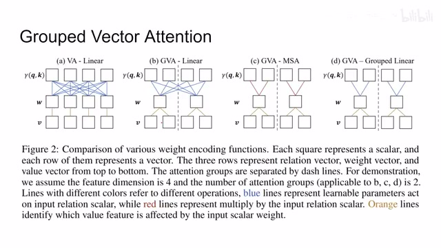
00:04:34–00:05:47 · 画面 009那比如说最左边这个是 vector attention，那对于这个 value 的每一个 channel，你都要预测一个值。这个是原版的最基础的这个 vector attention。那 group attention 也很简单对吧，我输入的还是这些 channel，但是我预测的数量减少了，但是每预测出来一个呢，它对应一个 vector 里面的很多个 channel。
那么这个呢，就是这个 group vector 的 attention。那相对应呢，你可以做的更激进一点对吧，像这里这里展示的是这个 multi-head self-attention。你想 multi-head self-attention 就是我这个 query key 和 value 里面我按照 channel 来分组对吧，每几个 channel 一起玩，每几个 channel 一起玩。然后不同组里的这个 channel 呢，相互不沟通，一样的可以用在这个 group vector 的 attention 里面。我分完组之后，我的 query 和 key 预测这个 attention 的时候只和这一组内的这个 query 和 key 的这些 channel 相交流。
然后呢，出来的这一个权重值，因为是这个 group vector attention 嘛，那管着这个 group 里面的所有 value 的这个各个 channel。那么这个是 GVA 加上这个 msa 对吧，相互分开对吧。那么相应的还有，我不做 msa 可不可以，我用 mlp 学一个对吧，但是区别于这个 linear，这是 group linear 就相当于我的输入只在于这个组内而不是去看到所有的这个 channel。
00:05:47–00:05:48 · 画面 010
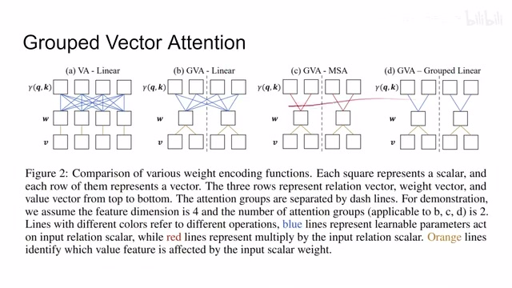
00:05:47–00:05:48 · 画面 01000:05:48–00:05:58 · 画面 011
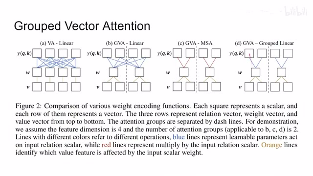
00:05:48–00:05:58 · 画面 011那么这里就是作者展示了根据这个 grouped vector attention 产生的不同的设计的取舍。
00:05:58–00:06:21 · 画面 012
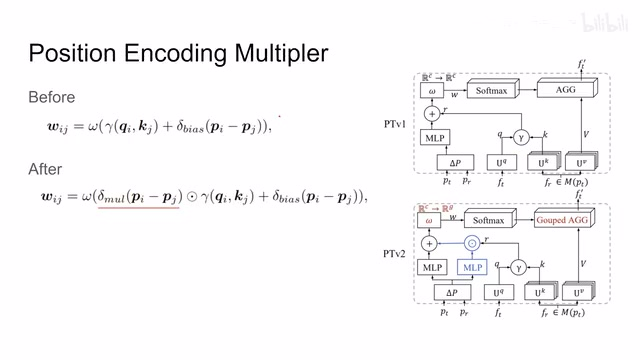
00:05:58–00:06:21 · 画面 012那么再往下来看就是这个 position encoding multiplier。在原来呢，我们的这个 position encoding 它是这个两个点，比如说你算两个点的这个 attention 对吧，它是两个点的这个位置相减然后过一个 mlp 算出一个这个 bias 项来。那么这个 bias 项呢直接加到你原来这个 relation 这 function 出来之后然后再送到这个 mlp 里面做，这是你原来的方法。那现在呢，区别原来的方法就是我现在多了一个 mlp 在这里。
00:06:21–00:06:22 · 画面 013
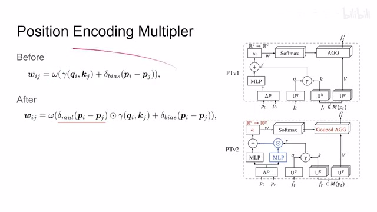
00:06:21–00:06:22 · 画面 01300:06:22–00:06:30 · 画面 014
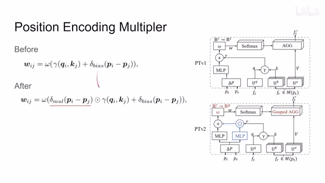
00:06:22–00:06:30 · 画面 014我还是用这两个点的坐标相减对吧？输入跟 bias 一样的，只不过这次我预测一个 MultiplierMultiplier 乘上原来的输入的值再加上 bias 对吧？再送到 tension 计算里面。整体来说就是我现在 position encoding 它的劲儿更大了，它能调制的范围更广了，就是多了这么一个项。这个是作者做的 position encoding 的一个修改，就是多了这一块对吧？乘上去。
00:06:30–00:06:31 · 画面 015
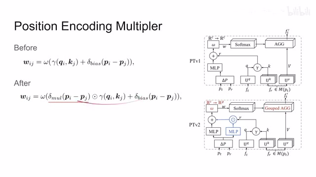
00:06:30–00:06:31 · 画面 01500:06:31–00:06:54 · 画面 016
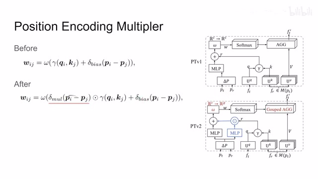
00:06:31–00:06:54 · 画面 01600:06:54–00:06:56 · 画面 017
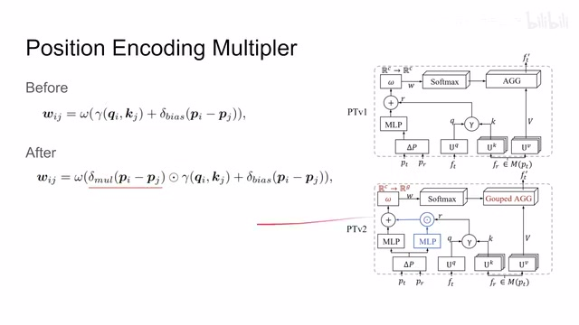
00:06:54–00:06:56 · 画面 017那最后呢是这个 partition based pooling 啊，这个更简单了。你看这是原来的时候，这是原来的那个示意图。原来时候做 pooling 怎么做呢？我先是在原来的这个点里面降采样，看看我要留哪些点。然后呢，要留的这个点的周围呢，我把这些点的这个信息透过 mlp 把它集成出来。那上采样的时候呢，也是点的坐标呢，你就可以直接查原来的坐标 feature 呢，原来是还用了 mlp 对吧？我在上采样的过程中，我一个 feature 应该怎么变。
00:06:56–00:06:58 · 画面 018
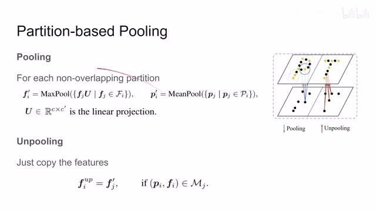
00:06:56–00:06:58 · 画面 01800:06:58–00:07:05 · 画面 019
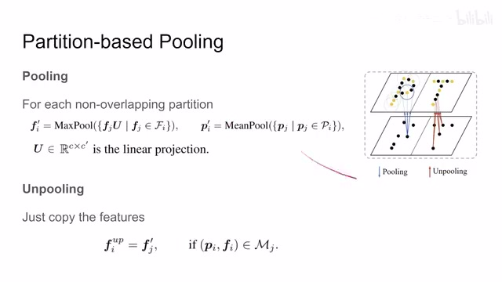
00:06:58–00:07:05 · 画面 01900:07:05–00:07:39 · 画面 020
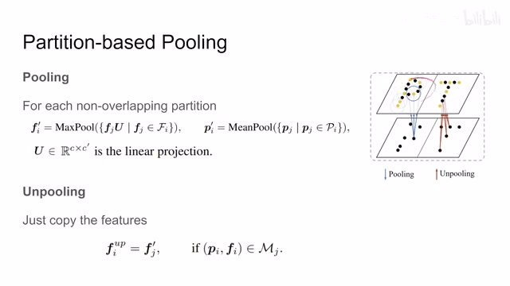
00:07:05–00:07:39 · 画面 020那么这种设计也就意味着你首先要降采样这个点云，然后每一个点你还要做它的 nearest neighbor，就是找它的最近邻跟它相邻的这些点，你要找这些点。那它的计算是很复杂的。因此，在这个版本中作者直接取消了这样一个设定，我怎么降采样？我直接在空间中画网格对吧？其实就是画这个 cube，画这个小方立方体。那作者管它叫 partition。那么降采样的时候。
00:07:39–00:08:08 · 画面 021
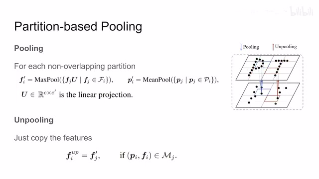
00:07:39–00:08:08 · 画面 021一个网格里面这些点，那就是一组嘛对吧？那 feature 这块呢，原来的 feature 这个方块中的所有的点做一个这个 linear projection，然后呢再做一个 max pooling。这个呢就是这个方块里面的这一个点呢，这个新的 feature。那么这个点的位置在哪里呢？对吧，这个方块中的所有的点求个平均值，这个 mean pool 对吧？然后呢就是产生了这个点的这个位置啊，这个是新的这个 pooling 这个过程。
00:08:08–00:08:09 · 画面 022
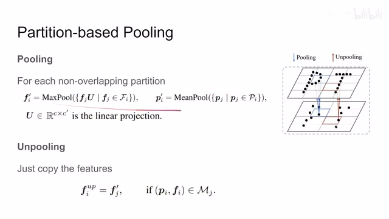
00:08:08–00:08:09 · 画面 02200:08:09–00:08:36 · 画面 023
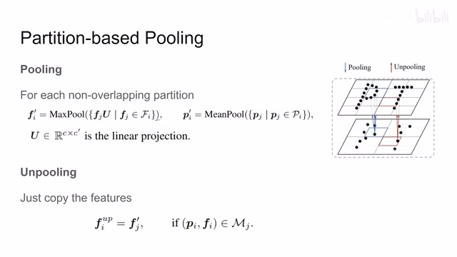
00:08:09–00:08:36 · 画面 023那么 unpooling 上采样这个过程更简单了，你把原来的这些点的位置保存下来对吧？还是从哪来的回哪去。那这些新的点的 feature 怎么办？直接一个复制，那就是这个点的 feature 是什么，直接复制到这个区域里面其他点的 feature 上对吧？这个是一个非常直接的设计。好的，那么以上就是本文的主要的技术的改动了对吧？attention。
00:08:36–00:08:37 · 画面 024
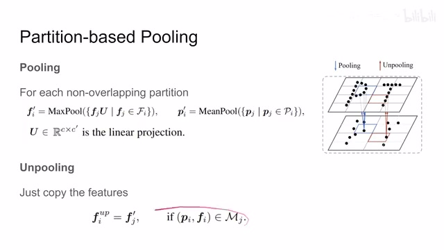
00:08:36–00:08:37 · 画面 02400:08:37–00:08:49 · 画面 025
00:08:37–00:08:49 · 画面 025把 attention 的 matrix 减了一下，value 给它分分组，然后更好的这个 positional embedding 加上这个更简单的这个 pooling 的这个设计。那整体的结构跟原来没什么太大的变化，都是一个 unet。那下面我们直接来看结果。这个首先是这个 segmentation 一些美好的数字，然后呢你像包括这个 shape classification 一些美好的数字对吧？那这样之后呢就是一些 ablation 比较有意思的。首先是这个 table4 它是这个。
00:08:49–00:08:50 · 画面 026
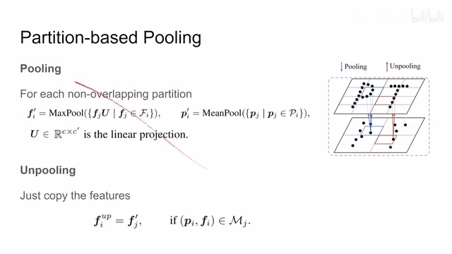
00:08:49–00:08:50 · 画面 02600:08:50–00:08:53 · 画面 027
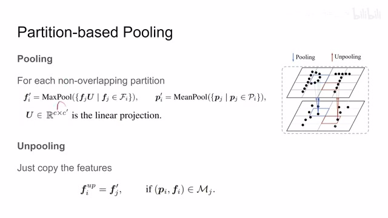
00:08:50–00:08:53 · 画面 02700:08:53–00:08:55 · 画面 028
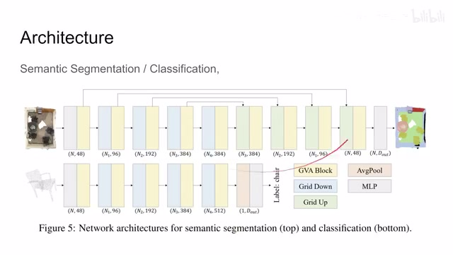
00:08:53–00:08:55 · 画面 02800:08:55–00:08:58 · 画面 029
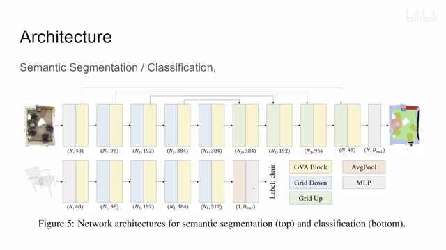
00:08:55–00:08:58 · 画面 02900:08:58–00:09:02 · 画面 030
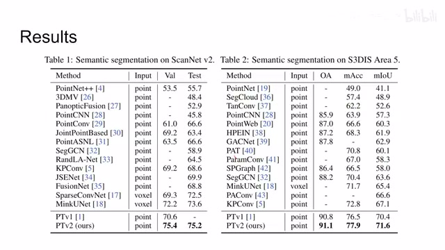
00:08:58–00:09:02 · 画面 03000:09:02–00:09:08 · 画面 031
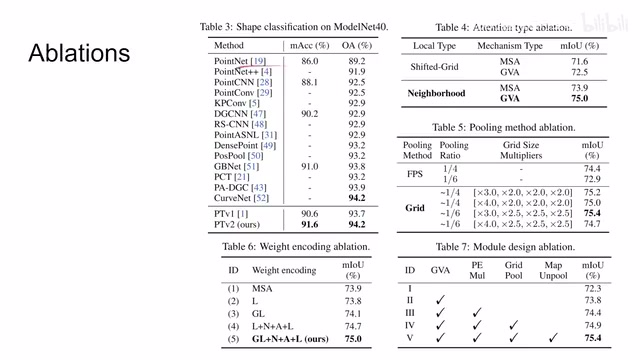
00:09:02–00:09:08 · 画面 03100:09:08–00:09:10 · 画面 032
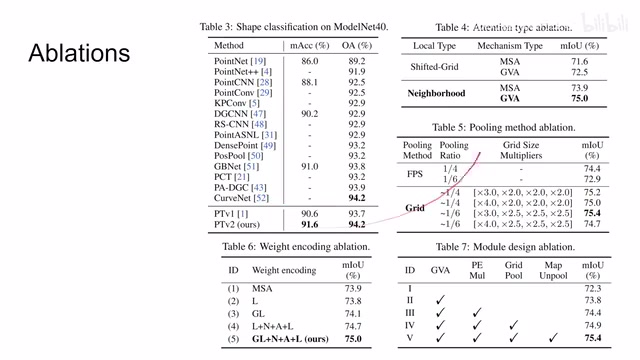
00:09:08–00:09:10 · 画面 03200:09:10–00:10:15 · 画面 033
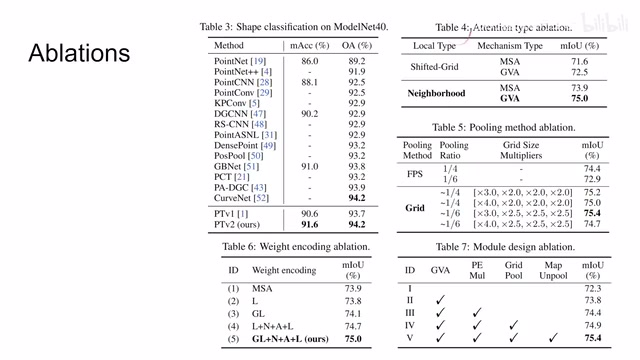
00:09:10–00:10:15 · 画面 033探讨了首先 attention 的种类，multi-self-attention 还是这个 group vector attention 对吧？这个讨论。然后呢这里讲了两种 local type，就是你在做 attention 的时候呢，你想这个点云中有很多的点吧，你不可能说每一个点跟其他的全部的点都去做 attention，那这样子的这个运算量实在是太大了对吧？那因此呢有两种常见的这个设计。
比如说这个 shifted grid 就是像 Swin 一样对吧？也是划分成网格，然后呢去跟这个网格里面的一起做，还有这个 neighborhood 就是查这个链接。那做了实验发现呢，这个 neighborhood 啊效果更好一点。那注意呢这里的这个 local type 这里的这个划分这个方式呢是给 attention 用的啊，这个区别于我们之前讲的 pooling。
pooling 呢在本文里面还是换网格对吧？根据网格来决定谁一起 pooling。但是在做 attention 的时候呢，用这个 neighborhood 也是，还是要算距离，谁的距离更近。这个呢效果更好一点。这个呢是关于这个 ablation。那剩下的呢，像这个 pooling 怎么选对吧？各个模块的设计等等。这个感兴趣的朋友呢，非常推荐你到原文查看。那总的来说呢，本文针对前作的这个各种设计进行了有针对性的升级，取得了相对满意的结果。
00:10:15–00:10:16 · 画面 034
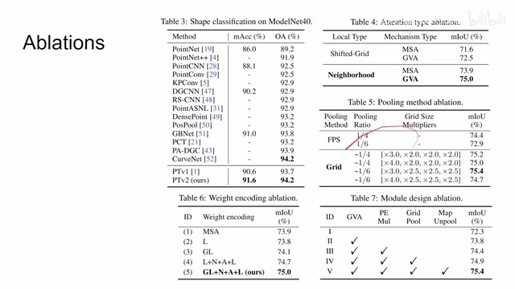
00:10:15–00:10:16 · 画面 03400:10:16–00:10:34 · 画面 035
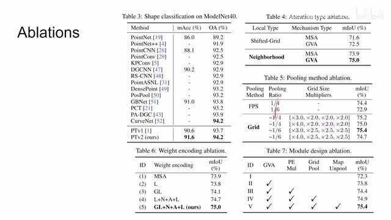
00:10:16–00:10:34 · 画面 035好的，那么以上就是我对这篇论文的一个快速的整理。那么感谢您的收看，再见。
00:10:34–00:10:35 · 画面 036
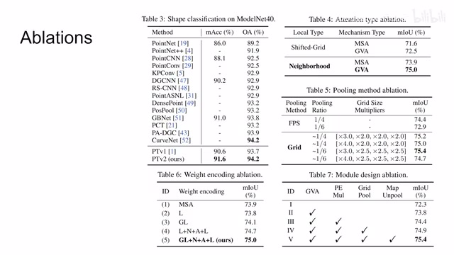
00:10:34–00:10:35 · 画面 036转写与来源说明 · 0 个自动复核提示
保留 27 个原始语音片段，0 个片段触发自动复核提示。提示仅用于定位可能的术语、重复或识别问题，不等于已确认错误。
讲解画面为源视频截图（640×360），不是可编辑 PPT 文件。全片按每秒 2 帧扫描内容变化，逐步展开页保留；连续动画保留代表画面。清晰度受源视频限制。
原视频：paper/合集_2026-10-16_新模型/[论文简析]Point Transformer V2[2210.05666].mp4
SHA-256：1dc4ef87b6c71349ee6c2c434e8623371572ffa50a9468486b1f0bbca12b3526
全文按视频语音与画面制作。原论文可从上方链接下载；完整资料包保留全文、原始逐字稿、字幕和校对记录。